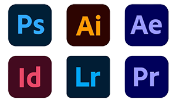

My name is Dicte Tengs, and I am 22 years old.
I am currently studying Multimedia Design at UCL, where I am exploring
both the creative and strategic sides of digital design.
Though I am early in my education, I have been gaining hands on
experience for years, driven by a deep passion for visual
communication and community engagement.
Before my studies, I spent over four years working voluntarily in
social media marketing, learning everything from content creation and
platform strategy to brand consistency and audience engagement. As a
self-taught marketer, I have developed an eye for design that
resonates, and a strong sense of how to shape brand identities that
feel authentic. More than anything, this experience has taught me the
importance of people and how to work with care, take initiative, and
grow through collaboration.
I am especially passionate about supporting creatives with a clear
vision and a desire to make an impact. My goal is to help you
translate your energy and identity into a strong visual brand, both
online and offline.
Whether you're just getting started or refining your aesthetic, I
would love to help bring your creative vision to life, from visual
assets and logos to social media strategy and audience connection.
I havde experience in the following programs:
